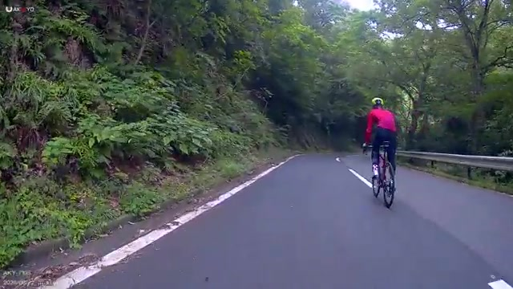

初めて自分の登りを外から見た。思ったより軽そうで、思ったより派手
先日の唐沢で、友人が動画を撮ってくれていた。ゴルビーを4本やったあと、友人と合流して唐沢を追加で登った日である。その途中、友人の後ろを走っていたら「行っていいよ」と言われたので、前に出て踏んだ。その30秒が残っていた。
自分の走りを第三者視点で見る機会は、ほとんどない。だから見ていて普通に新鮮だった。そして、思っていたのと少し違った。

ラップ平均は297W。ただし動画は中盤あたり
- この登り（ラップ全体）5分48秒 / 1.19km / 平均12.3km/h
- 出力（ラップ平均）平均297W / NP305W / 最大515W / 75kg基準で約3.96倍
- 心拍・回転（ラップ平均）平均140bpm / 最大158bpm / 平均74rpm
ここで先に断っておくと、この297Wは5分48秒のラップ平均であって、動画の瞬間の出力ではない。序盤はかなりゆっくり登っていて、動画は唐沢の中盤あたりである。つまり映像に写っている場面の出力は、平均より上のはずだ。正確な値は分からないので、ここでは数字を置かないでおく。
そのうえで言えるのは、この区間が全力ではなかったということ。ゴルビーを4本終えたあとで、高い出力を狙う理由がない。実際この日のゴルビーは328W・328W・323W・332Wだったので、ラップ平均297Wはそれよりかなり低い。友人の後ろを走っていたら「行っていいよ」と言われたので前に出た、それだけの区間である。
外から見ると、思ったより軽そうに見える
これが自分でも少し意外だった。スッと軽々乗っているように見える。上半身はあまり動いていないし、車体も左右に振れていない。座ったまま淡々と進んでいる。
走っている本人の感覚としては、そこまで「軽い」とは思っていなかった。ゴルビー4本のあとなので、脚はそれなりに来ている。それでも外から見ると、そういう風には見えない。体感と、外から見た印象は一致しない。当たり前かもしれないが、実際に映像で確認したのは初めてだった。
緑のメットに赤いジャージ。思ったより目立っている
もうひとつ、見ていて気づいたことがある。単純に派手である。黄緑のヘルメットに赤い長袖ジャージ。自分で選んでおいてなんだが、外から見るとかなり目立つ。
唐沢は木が多くて、路面も日陰でけっこう暗い。その中で赤がはっきり浮いている。動画の後半、距離が開いて小さくなっても、赤い点としてずっと見えている。派手なウェアは着ていて少し気恥ずかしいこともあるが、こうして外から見ると納得する。
これは見た目の好みだけの話ではない。山の中の細い道で、後ろから来る車に早く見つけてもらえるのは普通に安全側である。目立つのは、正しい。今後もこの方向でいいと思う。
「全力ではない時の自分」がどう見えるか
このラップの最大心拍は158bpm。この日の最大は166bpmだったので、心拍側にはまだ上がある。動画の瞬間はラップ平均より踏んでいるはずだが、それでもゴルビーの330W前後には届いていないだろう。つまりこの映像は「全力の自分」ではなく「そこそこ踏んでいる時の自分」である。
それを踏まえると、見え方の解釈も変わる。軽く見えるのはフォームが完成したからではなく、まだ余力がある状態だからという可能性が高い。だからこの映像は「今のフォームの完成形」ではなく、比較用の基準として置いておくのがよさそうだ。次に全力の区間を撮ってもらえば、その差がそのまま課題になる。
見てみて思ったこと
写真は自分でも撮る。でも走っている自分を後ろから見る機会は、まずない。今回それが30秒だけ残った。それだけで、けっこう発見があった。
思ったより軽そうに乗っている。思ったより派手で目立っている。そして、これは全力の自分ではない。見た目の印象と、中身の数字は別物だった。数字を追いかける練習ばかりしていると、自分がどう動いているかは案外分からない。たまにはこういう記録もあった方がいい。
撮ってくれた友人には感謝しかない。次は全力で踏んでいる時を撮ってもらおうと思う。たぶん、そっちは全然軽く見えないはずである。
次に見るポイント
- 全力との比較ゴルビー本番の区間を撮ってもらい、この映像との差を見る
- 上半身疲れてきた時に、この静かさを保てているか
- 見え方暗い林道でどこまで目立つか。夕方や曇りの日はどうか
- 記録の残し方数字だけでなく、映像も定期的に残しておくか